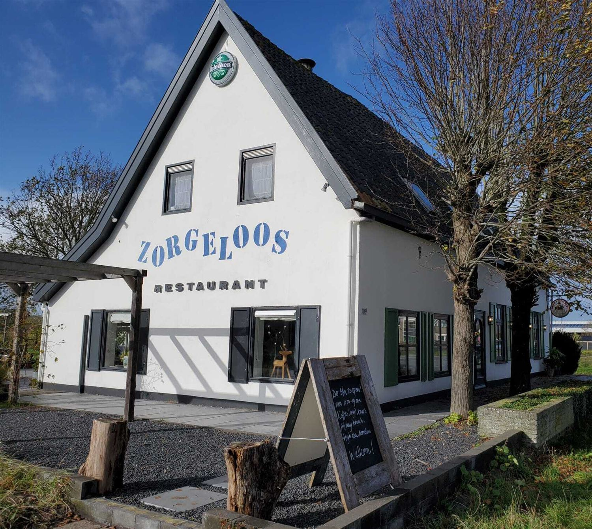
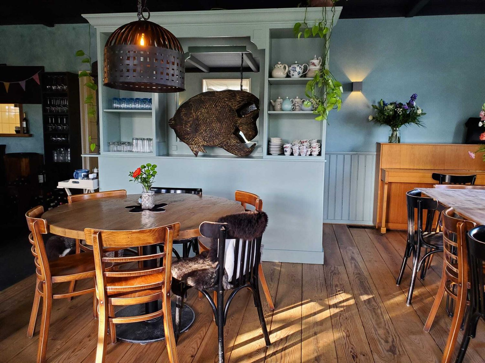
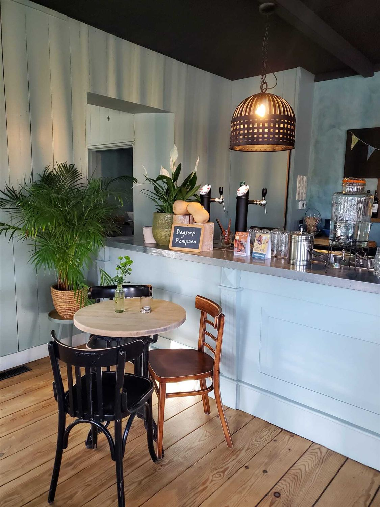
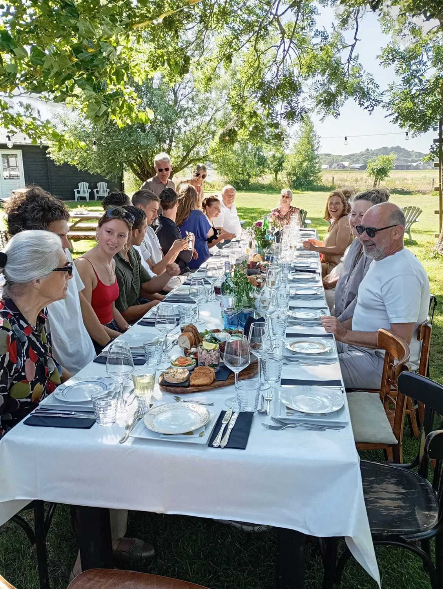
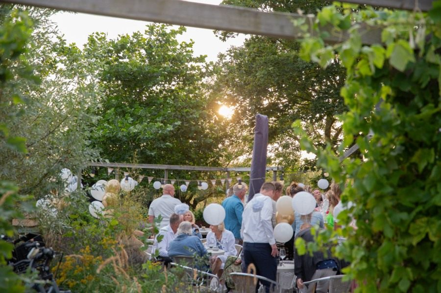
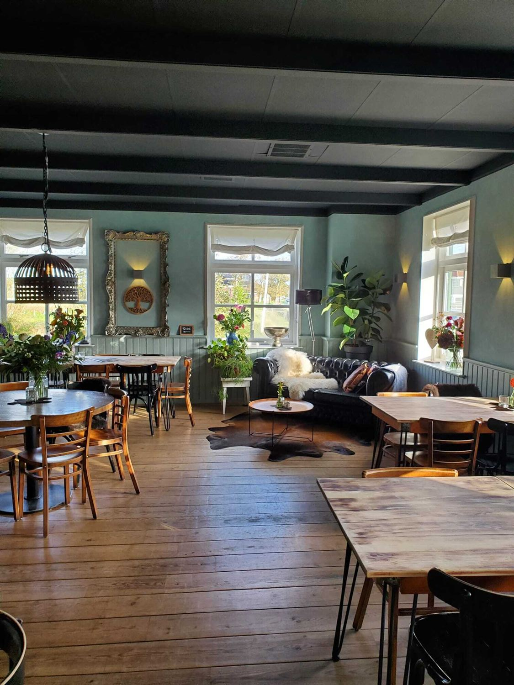
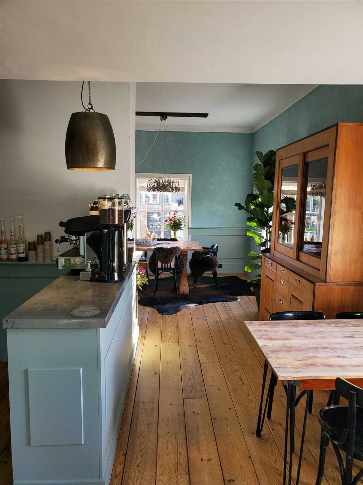
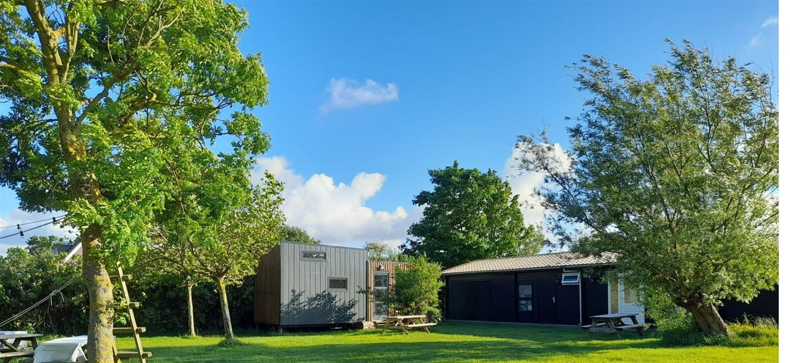

High Tea
Onbeperkt thee, diverse sandwiches (o.a. gerookte zalm), warme hartige hapjes, huisgemaakte scones en zoete hapjes.
29,50

Herenweg 109, Egmond aan den Hoef
Wij verwelkomen jullie graag in onze gezellige huiskamer van Rinnegom. Voor koffie met de lekkerste appeltaart, een uitgebreide lunch, een borrel in de tuin of een diner aan de duinen.
Restaurant Zorgeloos is een familiebedrijf waar gastvrijheid en persoonlijke aandacht centraal staan. Samen met ons vaste en professionele team zorgen we ervoor dat je je meteen thuis voelt.
Je bent bij ons de hele dag welkom: vanaf 10 uur 's ochtends voor een kop koffie en een taartje, voor lunch en arrangementen, tot en met het diner. 's Avonds pakken we graag uit met onze regelmatig wisselende à la carte kaart en het Chef's Shared diner.


Samen uitgebreid genieten, op reservering. Prijzen per persoon.
Onbeperkt thee, diverse sandwiches (o.a. gerookte zalm), warme hartige hapjes, huisgemaakte scones en zoete hapjes.
29,50
Ontvangst met een feestelijk glas prosecco, antipasti, olijven, brood en dipjes. Daarna een glas wijn met bruschetta's en een soepje, en een glas wijn met drie warme bites.
42,50
Drie rondes samengesteld door chef Rick, met vis en vlees of vegetarisch.
37,50
Prosecco, koffie en thee, soep, broodjes, koude gerechten, warme hapjes en een dessert.
39,50
Drie gangen: een etagère met koude hapjes en soep, een etagère met warme hapjes, en dessert.
34,50
Onze High Tea met een glas prosecco (met of zonder alcohol), versierde hapjes en een versierde tafel.
39,50
Een arrangement cadeau doen? Cadeaubonnen voor High Tea, Shared diner of een bedrag haal je bij ons in het restaurant.

Een verjaardag, familiedag, bedrijfsuitje of een avond met vrienden: we stellen graag een arrangement voor jullie samen. Prijzen per persoon.
Planken met antipasti, een soepje, een minikroketje, twee bites (kip teriyaki en Spaanse gehaktballetjes met friet en salade) en een dessert.
Hartige koude hapjes, soep, warme hapjes met friet en salade, en een grand dessert.
Een menuvoorstel op maat, afgestemd op jullie gezelschap.
Bitterbal van Oma Bob, bonbon van eiersalade en gerookte zalm, rundercarpaccio met truffelmayonaise en oude kaas, huisgemaakt soepje, zeebaars met garnalenkroketje, English pie met aardappelpuree en jus, en een petit grand dessert.
Hamburger van 100% rund, gemarineerde barbecueworst, kipsaté van kippendij, gekruide speklapjes, vegetarische saté van tempeh en een groentespies. Met aardappelsalade, pastasalade, sauzen en stokbrood met kruidenboter.
Hamburger, ribeye steak met rozemarijn, kipsaté, gambaspies, zalm in pakketje met citroen en dille, vegetarische burger en groentespies. Met huzarensalade, groene salade met olijven, tomaat en feta, salade caprese, sauzen, stokbrood met kruidenboter, tapenade en aioli, inclusief friet.
Interesse in een groepsarrangement? Mail ons of bel 072 743 2517.
Maak van elk moment een onvergetelijk feest. Of het nu gaat om een verjaardag, jubileum, bedrijfsfeest of bruiloft: wij zorgen voor de sfeer en beleving. Van intiem tot groots, ook buiten de reguliere openingstijden.
Onbeperkt tapbier, wijn en fris, drie rondes hapjes en nootjes.
29,50
Onbeperkt tapbier, wijn, fris en binnenlands gedistilleerd.
35,50
Een bruisende borrel, onbeperkt tapbier, wijn en fris, vier rondes hapjes en nootjes.
39,50

Bij Zorgeloos regelen wij alles wat bij jullie bruiloft komt kijken, groot of klein: van trouwen in de tuin tot een spetterend avondfeest.
Vraag een offerte op maatReserveer je kerstarrangement tot en met donderdag 24 december. Dieetwensen horen we graag vooraf. Kerstborrels en evenementen zijn ook buiten de reguliere openingstijden mogelijk.
Een glas prosecco of alcoholvrij mousserend, onbeperkt koffie en thee, soep, broodjes, croissant, gerookte zalm en ei, kaas, charcuterie, warme hartige gerechten en een kerstdessert.
Prosecco, sandwiches (o.a. gerookte zalm), quiche, hartige hapjes, scones, brownies, frivolitees en bonbons. Na afloop een drankje naar keuze met luxe hapjes.
Een box met verse thee, sandwiches, quiche, hartige hapjes, scones met clotted cream en jam, brownies, frivolitees en bonbons.
Flesje appelsap, chips, patatjes met kipnuggets, een appel, een waterijsje en een kerstverrassing.
Op zoek naar een kerstcadeau? Een cadeaubon van Zorgeloos haal je bij ons in het restaurant.



Naast het restaurant verhuren wij het Chalet Egmond (2 tot 6 personen, twee slaapkamers, eigen terras, huisdieren welkom tegen toeslag) en een Tiny House (tot 3 volwassenen). De tuin deel je met onze restaurantgasten en parkeren is gratis.
| 1 september t/m 31 maart | Donderdag t/m zondag vanaf 10.00 uur |
|---|---|
| 1 april t/m 31 augustus | Woensdag t/m zondag vanaf 10.00 uur |
Tussen 16.30 en 17.00 uur eten we als klein team samen en verzorgen we alleen drankjes. We sluiten wanneer onze laatste restaurantgasten huiswaarts gaan, zodat iedereen rustig kan genieten van een ontspannen en zorgeloze avond.
Herenweg 109
1934 PB Egmond aan den Hoef
072 743 2517
info@restaurantzorgeloos.nl
Gratis parkeren op het parkeerterrein aan de noordkant en langs de Weg naar De Bleek.